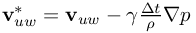
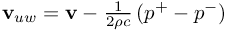
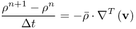
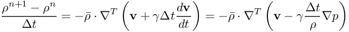
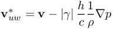
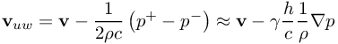
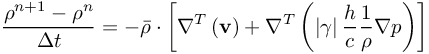

Simulate with complex geometries and complex physics
GASDYN_Upwind2ndOrder
DEPRECATED!!! (GASDYN parameter for FPM1)
This is a deprecated parameter. Do not use anymore. Instead, use the parameters GASDYN_Upwind_Lbeta and GASDYN_Upwind_Lgamma .
GASDYN_Upwind2ndOrder = 0.0
Default: GASDYN_Upwind2ndOrder = 0.5
Represents gamma in the improved (practically second order} upwind velocity 
Second order is reached, if GASDYN_Upwind2ndOrder = 0.5 .
Please remember that the classical upwind velocity is given by 
The distance between the upwind locations at the plus(+) and minus(-)-points is ruled by the parameter GASDYN_UpwindOffset.
This second order idea comes from the following consideration: First order (for example for the density) is given by

Higher order (second order) improvement is given by

OPTION:
Choose this parameter negative, i.e.
GASDYN_Upwind2ndOrder = -0.2
This will lead to the improved upwind velocity

This improved upwind idea comes from the consideration that

So, the classical upwind velocity can be approximated in this way. The nice side effect is, that the divergence of the upwind velocity leads to laplace-lke term (damping!!!) in the numerical scheme, i.e.

Note: This parameter can also be set chamberwise for multiphase simulations (see also KindOfProblem, CHAMBER).
If it is not set for specific chambers, it is automatically set according to the non-chamberwise definition for all chambers.
| This item is referenced in: | |
|---|---|
| GASDYN_Upwind2ndOrder | DEPRECATED!!! (GASDYN parameter for FPM1) |